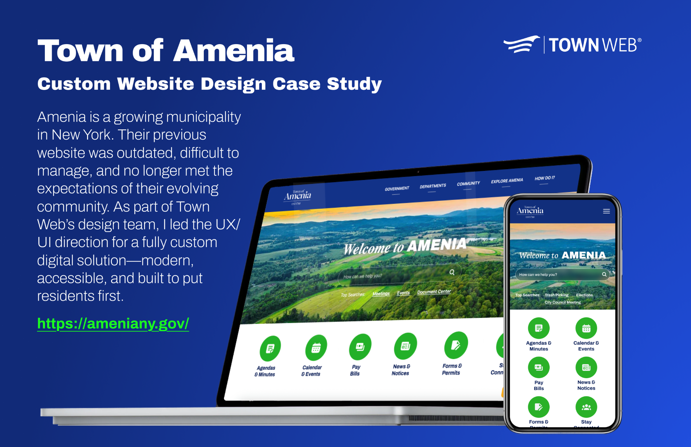
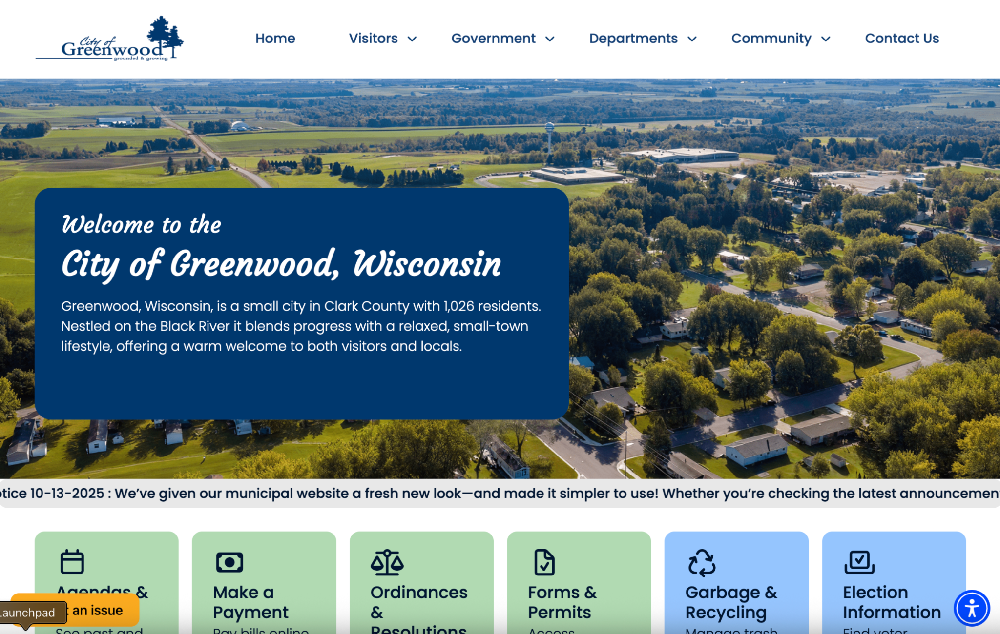
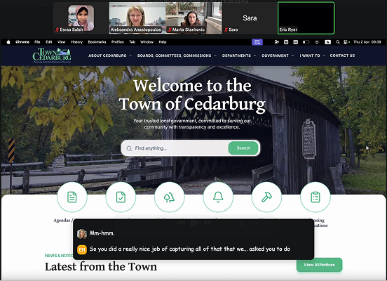

01 / PUBLIC-SECTOR WEB DESIGN
Municipal
Websites
For the last several years, a large part of my work has been designing websites for U.S. towns and cities. These projects combine dense public information, recurring resident tasks, accessibility requirements and very different community identities.
My role has covered discovery, information architecture, responsive UX/UI, accessibility, client reveals and revisions, design systems, implementation support and QA.




MILLSTONE
DELAVAN
EATONTOWN